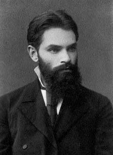

1857–1918
Russian
Stability theory, dynamical systems, probability theory
Aleksandr Mikhailovich Lyapunov was born in Yaroslavl in 1857 into a family of scientists — his father was an astronomer, and his brother became a renowned Slavicist. He studied under Chebyshev at St Petersburg and absorbed Chebyshev's emphasis on rigorous, constructive methods.
Lyapunov's 1892 doctoral thesis, The General Problem of the Stability of Motion, is one of the most influential works in applied mathematics. In it, he posed and answered a fundamental question: how can you determine whether an equilibrium of a dynamical system is stable without solving the differential equations? His answer — the direct method — was to construct a scalar "energy-like" function (now called a Lyapunov function) that decreases along trajectories. If such a function exists and has certain properties, the equilibrium is stable; if its derivative is strictly negative, the equilibrium is asymptotically stable.
This was a breakthrough because it replaced the hopeless task of solving nonlinear ODEs with the (still difficult but feasible) task of finding an appropriate Lyapunov function. The method is now used throughout control theory, robotics, and engineering. Lyapunov also made major contributions to probability theory, giving the first rigorous proof of the central limit theorem under general conditions. He died in 1918, shortly after his wife's death from tuberculosis.
| Phase | Page | Referenced for |
|---|---|---|
| Phase 8 | The Matrix Exponential | Stability theory for linear systems (with Poincaré) |
| Phase 8 | Stability and Lyapunov's Method | Definition of Lyapunov stability |
| Phase 8 | Stability and Lyapunov's Method | Lyapunov function definition |
| Phase 8 | Stability and Lyapunov's Method | Lyapunov stability theorem (direct method, 1892) |
| Phase 8 | Stability and Lyapunov's Method | Historical context — 1892 doctoral thesis |